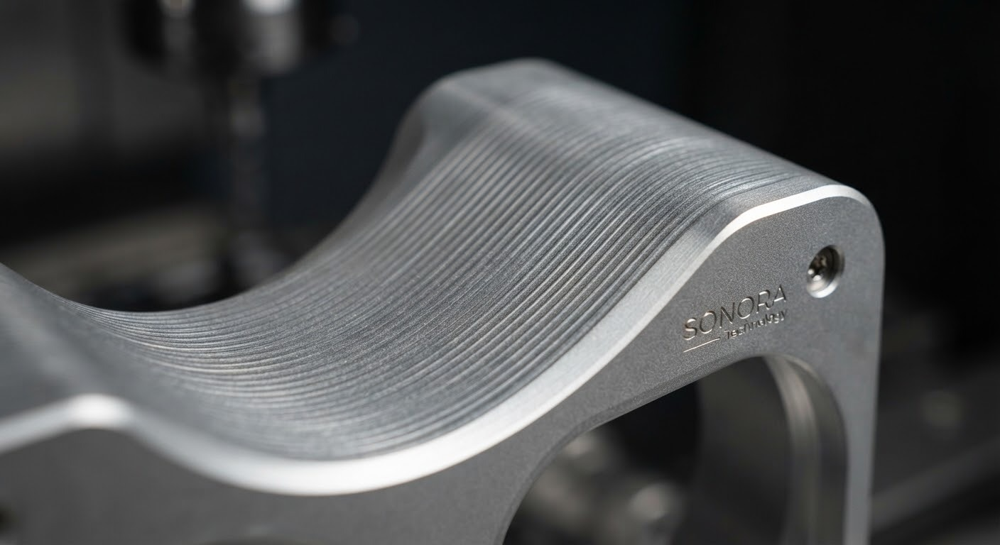
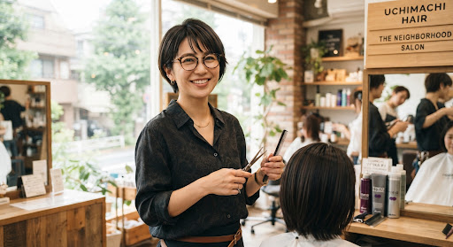

Flow.ご依頼の流れ
相談から公開まで。
まずはお話を聞くところから。
公開までの流れを、6つのステップに分けてご案内します。
相談・ヒアリング
お店のことや、今気になっていることを聞かせてください。
ご提案・お見積もり
必要なページや制作物を整理し、進め方、日程、費用をお伝えします。
設計・デザイン
伝える内容を並べ、写真や文章を入れた画面を一緒に確認します。
実装・動作確認
サイトを組み立て、スマホやPCで見え方と操作を確認します。
最終確認・修正
公開前に、写真、文章、営業時間などの細かい部分を見直します。
公開・運用サポート
確認が終わったら公開します。その後の更新もご相談いただけます。

